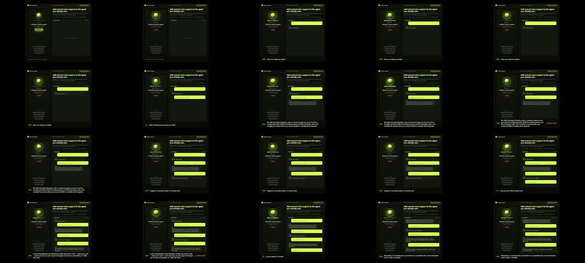

X｜Min Choi：ElevenLabs Speech Engine 讓既有 AI Agent 具備即時語音

Min Choi（@minchoi）在 X 分享一段 ElevenLabs Speech Engine demo，文字主張：「I just gave my AI agent a voice」；並說 ElevenLabs Speech Engine 讓 agent 可以 listen、talk、stream replies，且 real time 處理 interruptions。貼文同時標示 `#ad` 與 `#ElevenAPIPartner`，因此本文把它歸檔為 sponsored demo + 官方能力查核，而不是中立評測。
影片畫面
已保存影片縮圖與 contact sheet。畫面是深色、螢光綠風格的客服語音 agent demo：
- 左側手機 mockup 顯示「Northstar Support」「Start voice call」。
- 主標題為「Add natural voice support to the agent you already own.」
- 小標提到 ElevenLabs Speech Engine handles speech、turn-taking、streaming、interruptions，server keeps the LLM、knowledge、live data、workflows。
- 流程列出：Customer speaks → Speech Engine runs the voice loop → Your AI supplies the answer。
- 右側有 Live transcript 區塊，影片中逐步出現語音對話文字與 setup steps。
- 字幕/旁白場景包含「How can I help you today?」「What checking accounts do you offer?」「I lost my card. What should I do?」等客服情境。
從 contact sheet 可觀察到 demo 的重點是「把既有 agent 接上語音層」，不是展示一個完整客服後台產品。
官方文件查核
ElevenLabs 官方文件目前把 Conversational AI 文件導向 `ElevenAgents`。Overview 說明 ElevenAgents 協調 4 個核心元件：
- Speech to Text / ASR 模型。
- 使用者選擇的 LLM 或 custom LLM。
- 低延遲 Text to Speech，支援大量 voices 與多語言。
- proprietary turn-taking model，負責 conversation timing。
WebSocket 文件的 meta description 明確寫：「Create real-time, interactive voice conversations with AI agents」。JavaScript SDK 文件說可在數分鐘內部署 customized, interactive voice agents，並提到會建立連線、使用 microphone 與 ElevenLabs Agents agent 溝通。
Conversation flow 文件說明可設定 timeouts、interruptions 與 turn-taking during conversations。這能支持貼文中「stream replies」「handle interruptions in real time」的方向，但實際延遲、打斷自然度與穩定性仍取決於網路、瀏覽器、LLM latency、TTS voice、音訊格式、部署區域與應用端狀態管理。
可轉成教學的架構
這則 demo 適合整理成「語音 agent 前端層」架構：
- Client UI：手機或網頁啟動 voice call，取得 microphone permission。
- ElevenLabs voice loop：ASR、turn-taking、TTS、串流音訊與打斷處理。
- Existing AI agent：保留原本的 LLM、tools、knowledge base、CRM / order / ticket workflows。
- Transcript / state：同步顯示 live transcript，必要時把對話寫入客服系統。
- Guardrails：處理敏感資料、身分驗證、錯誤轉人工、保留/刪除音訊與對話紀錄。
對欒帥的課程或 AI 學習雷達來說，它可放在「agent 不只是文字聊天，而是多模態通道接入」單元：同一個 agent backend，可以被網頁文字、LINE、電話、語音 widget 或 app microphone 觸發。
風險與限制
- 這是 sponsored post，需區分 demo 行銷語與 production readiness。
- 「real time」不是單一模型能力，還包含網路、LLM 推理、工具呼叫、音訊串流與端上 buffer。
- 客服語音 agent 必須處理身份驗證、付款/帳戶資料、合規錄音告知與轉人工。
- Live transcript 與 audio retention 涉及個資與隱私政策；應確認 ElevenLabs retention / privacy 設定。
- interruption / barge-in 在真實吵雜環境容易誤觸，需要測試麥克風、VAD、turn-taking 與 fallback。
- 若使用品牌聲音或真人 voice clone，仍需聲音授權與 AI 合成揭露。